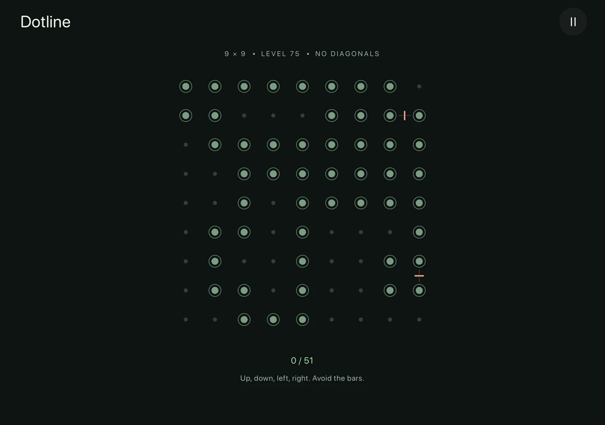
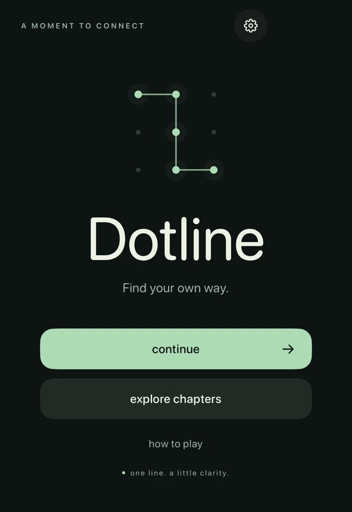
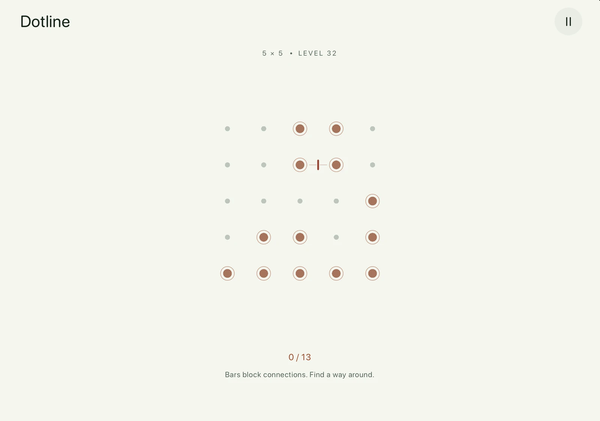

A MOMENT TO CONNECT
One line.
A little clarity.
A quiet puzzle. A single, unbroken stroke.
Connect the dots and find your own way.
Made for iPhone & iPad


525puzzles to explore
3 × 3 9 × 9room to grow
Your pace.no timer, no lives
01 / FIND YOUR FLOW
Simple to begin.
Satisfying to figure out.
- 01
Start with a spark.
Begin on any illuminated dot. The grey dots can stay right where they are.
- 02
Keep the connection.
Slide to neighboring dots without lifting your finger. Visit every lit dot once, without crossing your path.
- 03
Feel it fall into place.
Each connection glows with a gentle tap of feedback. Find a dead end? Lift your finger and take another route.
02 / A LITTLE MORE ROOM
Small beginnings.
Beautiful possibilities.
Seven chapters take you from a handful of dots to a whole new perspective. Finish 20 puzzles to open the next grid size. There’s always more to explore where you are.
- 33 × 3beginnings
- 44 × 4rhythm
- 55 × 5balance
- 66 × 6flow
- 77 × 7depth
- 88 × 8focus
- 99 × 9expanse

SAME CALM. A NEW CHALLENGE.
A few twists
along the way.
Small barriers ask you to find a different route. Later puzzles keep you moving up, down, left, and right. Each new rule makes a familiar grid feel fresh.
03 / MAKE A LITTLE SPACE
Less rush.
More just one more.
No clock to race. No lives to lose. No hints to pull you away from that moment when it clicks.
Settle into light or dark, add a little sound, or keep things still with reduced motion. Your progress saves on your device and syncs with iCloud when available, ready whenever you are.
Offline play. No Dotline account. No ads.
LET’S CONNECT
A thought?
A question?
We’d love to hear what’s on your mind.